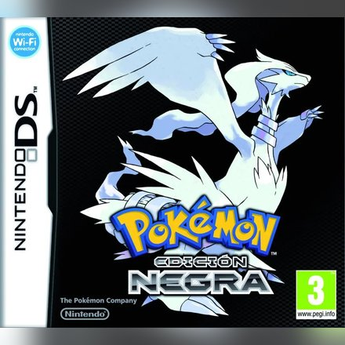
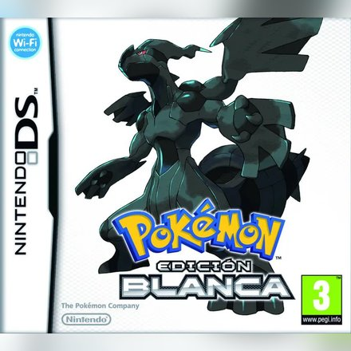
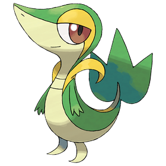
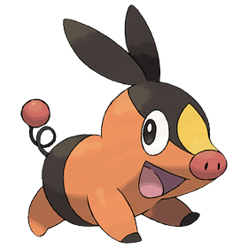
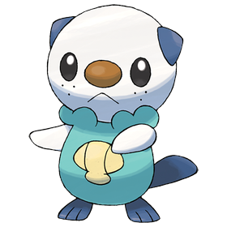

Pokémon Negro
Nintendo DS · 2010
Región de Teselia · Negro y Blanco (2010)
Aquí va la introducción a la región de Teselia: dónde está, cómo es y qué la hace especial.
Aquí puedes contar la historia de la región: su pasado, sus leyendas, sus villanos, la Liga Pokémon...
Y aquí lo que vive el protagonista: sale de su pueblo, recibe su primer Pokémon de la Profesora Encina y empieza su viaje.


Nintendo DS · 2010

Nintendo DS · 2010


